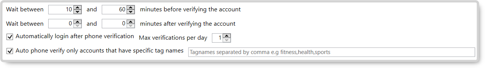
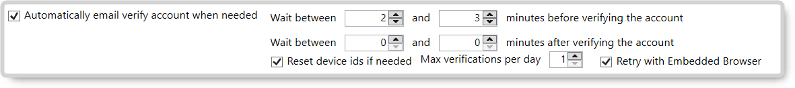
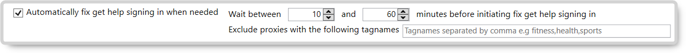
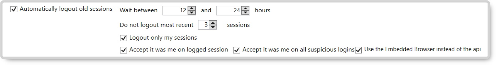

Search The JARVEE Knowledge Base
This article is exclusive for the Instagram sub-tab of the Settings > Social Platforms tab > Instagram tab
Instagram:

✅ Limit number of concurrent Instagram actions (improve performance) – this lets you decide the X number of maximum actions to be done on Instagram accounts at the same time.
✅ Enable Follow different users across all accounts – this option is used to allow all your Instagram accounts on JARVEE to follow different users regardless of the source used.
- Apply extended results – instead of going only through the followed users (once a user is unfollowed, it can be followed by another account), this will keep track of all followed users including the unfollowed ones so it will not be followed again by another account that you have in Jarvee.
✅ Enable Scrape different users across all accounts – this option is used to allow all your Instagram accounts on JARVEE to scrape different users regardless of the source used.
✅ Enable Like different users across all accounts – this option is used to allow all your Instagram accounts on JARVEE to like different users’ posts regardless of the source used.
✅ Enable Like Comments of different users across all accounts – this option is used to allow all your Instagram accounts on JARVEE to like comments of different users regardless of the source used.
✅ Enable Comment different users across all accounts – this option is used to allow all your Instagram accounts on JARVEE to comment on different users’ posts regardless of the source used.
✅ Enable Repost different posts across all accounts – this option is used to allow all your Instagram accounts on JARVEE to repost different posts regardless of the source used.
✅ Enable watch different stories across all accounts – this option is used to allow all your Instagram accounts on JARVEE to watch different stories regardless of the source used.
✅ Enable different users/posts/stories only across accounts with same tagname – this option is used to allow Instagram accounts of the same tag to follow/like/comment/repost/contact/view different users. This will only work when the enable different users/post/stories options are enabled.
✅ Enable minimum delay between operations – this lets you decide long is the delay (from x – y seconds) before executing another action on the account.
✅ Update account name when changing Instagram username – this automatically updates the account name under Social Profiles every time the Instagram username is changed.
✅ Do not use embedded browser to login on Instagram – this will not automatically log the account in the embedded browser when verifying an account (you can still login manually on the EB)
- Always keep the accounts logged in the embedded browser –
✅ Do not use embedded browser to follow on Instagram – this will not allow the follow action to be executed via the embedded browser when the follow action ails via API.

✅ Use only embedded browser to follow – this will execute the follow actions only on the embedded browser.
- Logout from embedded browser when follow using Embedded Browser is blocked – check this option if you want to be logged out from the embedded browser once the follow action doesn’t succeed. This is useful when the follow is blocked in EB, then a logout/login will happen and it starts working again.
✅ Use only embedded browser to unfollow – this will execute the unfollow actions only on the embedded browser.
- Logout from embedded browser when unfollow using Embedded Browser is blocked – check this option if you want to be logged out from the embedded browser once the unfollow action doesn’t succeed. This is useful when the unfollow is blocked in EB, then a logout/login will happen and it starts working again.
✅ Use only embedded browser to like – this option allows you to use only the embedded browser to like.
- Logout from embedded browser when like using Embedded Browser is blocked – check this option if you want to be logged out from the embedded browser once the like action doesn’t succeed. This is useful when the like is blocked in EB, then a logout/login will happen and it starts working again.
✅ Use only embedded browser to like comments – this will execute the like comments actions only on the embedded browser.
✅ Use only embedded browser to comment – this option allows you to use only the embedded browser to comment.
✅ Use only embedded browser to send direct messages – this will send direct messages only on the embedded browser. Note that this will not work when sending videos as that is not supported via EB, and if there are videos to be sent, they will be processed via API.
- Logout from embedded browser when direct message using embedded browser is blocked (error code 46 or 508) – this will make the account logout from the embedded browser when sending direct messages via EB does not succeed.
✅ Use only embedded browser to save posts – this option allows you to use only the embedded browser to save posts.
✅ Use only embedded browser to post – this will execute posting actions only on the embedded browser and is only for posting single images. When posting videos or albums, the API will be used for posting. This also only applies when posting on the wall via Campaign.
✅ Limit the maximum number of embedded browser logouts to x and y per day – this will let you indicate the maximum number of times that a logout operation can be done via the embedded browser.
- Do not clear cookies when logging out – use this option if you don’t want the logout to clear cookies.
✅ When logging out from the embedded browser due to a block, automatically log back in right away instead of when tools start executing – this option has helped some users to get less blocks when the login operation is done right after the logout instead of logging in when tools start executing.
✅ Relogin when IG does not show the caption after posting – there are times when the post does not show and this can be resolved by logging out and logging back in. This will do the relogin automatically when the issue happens.
✅ Keep phone number from profile after phone verification – after phone verification, IG usually changes the phone number on your account with the number you used to do the verification. Use this option if you would like to keep the phone number that you have in your profile after phone verification.
✅ Use the Embedded Browser instead of the API to phone verify your account – this will use the option to use the embedded browser for auto phone verification under Social Profiles > Actions on Selected Profiles.
✅ Automatically phone verify account when needed – use this to automatically phone verify the account when it gets a PHONE VALIDATION status. Note that the Settings > Connectivity > Instagram Phone Verification option should be configured with an sms provider with credits for this to work.

- Wait between x and y minutes before verifying the account – this denotes the amount of time spent before Jarvee tries to phone verify the account.
- Wait between x and y minutes after verifying the account – use this option if you want the account to switch to valid after x – y minutes after phone verification.
- Automatically login after phone verification – use this to change the status from pending to valid right after verification.
- X max verifications per day – use this to specify if you want your accounts to be verified more than once per day.
- Auto phone verify only accounts that have specific tag names – with this option checked, only accounts containing the specified tag names will automatically undergo phone verification.
✅ Automatically email verify account when needed – use this to automatically email verify the account when it gets an EMAIL CONFIRMATION status. Note that the Social Profiles > Details > Email Validation tab should be configured for this to work.

- Wait between x and y minutes before verifying the account – this denotes the amount of time spent before Jarvee tries to email verify the account.
- Wait between x and y minutes after verifying the account – use this option if you want the account to switch to valid after x – y minutes after email verification.
- Reset device IDs if needed – this will also reset the device ID for the account if needed after the email verification process.
- X max verifications per day – use this option if you don’t want to perform email verification on your account more than once per day.
- Retry with Embedded Browser – select this if you want the email verification to be retried on the embedded browser if the API email verification fails.

✅ Automatically restore compromised accounts when needed – use this option for Jarvee to automatically restore your accounts which get the COMPROMISED status. This will change the password as well for the account.
- Wait between x and y minutes before restoring the account – this denotes the amount of time spent before Jarvee tries to restore the account.
- Wait between x and y minutes after restoring the account – use this option if you want the account to switch to valid after x – y minutes after restoring the account.
- Auto-restore only accounts that have specific tag names – this option will only auto-restore the accounts which have the same tag name specified.
- Send email with new password to client – use this option to notify your client when the password on the account has been changed after restoring the compromised account.
- Automatically solve captcha account when needed – use this option to solve captchas automatically. This will only work if you have a 2Captcha account with credits configured under Settings > Connectivity.
- Wait between x and y minutes before initiating solve captcha – this denotes the amount of time spent before Jarvee tries to solve the captcha.
✅ Automatically fix get help signing in when needed – use this to automatically fix GET HELP SIGNING IN status. Note that the Social Profiles > Details > Email Validation tab should be configured for this to work and that the account password will be changed.

- Wait between x and y minutes before initiating fix get help signing in – this denotes the amount of time spent before Jarvee tries to fix the get help signing in issue.
- Exclude proxies with the following tagnames – proxies using the specified tagnames will not be picked as a proxy to use when completing the get help signing in verification.
✅ Automatically submit form to reactivate disabled accounts – use this option to submit the form to reactivate your account automatically. After submitting the form, you will get an email to send a selfie with your full name and username.
- Submit the form (appeal to recover your account) every x to y days – sending an appeal every x to y days and replying to the email increases the chances of getting your account back.
✅ Automatically logout old sessions – this option will automatically log the accounts out from old sessions every x and y hours.

- Do not logout most recent x sessions – you can set the maximum number of recent sessions that should be logged out.
- Logout only my sessions – this lets you decide whether to logout only your sessions (sessions which have a location or device name same as your current logged one) or if you would also like to include outside sessions.
- Accept it was me on logged session – this will click on ‘It was me’ if Instagram treats the current login as suspicious.
- Accept it was me on all suspicious logins – this will click on ‘It was me’ for all logins treated as suspicious by Instagram.
- Use the embedded browser instead of the API – useful if you want to logout old sessions and accept suspicious logins via the embedded browser.
✅ When restoring compromised accounts change password with xxxxxx – check this option if you want to set your own passwords that will be used when restore compromised accounts is changing the password. The password needs to have at least 5 characters.

✅ Enable delay when verifying multiple accounts at once – this will delay the execution between verifying accounts when using the ‘Verify Selected Profiles’ option from Social Profiles > Execute Actions on Selected Profiles.
✅ Enable delay when phone verifying multiple accounts at once – this will delay the operations when performing phone verification on multiple accounts at the same time (applies to manual and automatic phone verification).
✅ Enable delay for bulk profile edit and bulk change password – this will delay the execution between profile updates and change passwords when using Edit Selected IG Profiles with Spin from Social Profiles or Change Passwords from Social Profiles > Actions on Selected Profiles.
✅ Disable Auto Report Problem when getting a spam error message for Follow/Like or Comments – check this option if you do not want to automatically send a report when getting blocked by IG for spam reasons.
✅ Disable automatic verification when Instagram deletes a post – use this option if you want to manually check and verify your account when IG blocks you for getting a post deleted.
✅ Disable automatic API relogin when action blocked – check this option if you don’t want to logout using the API when you are action blocked.
✅ Automatically agree after post deletion – there are some posts which IG decides to be violating their Terms of Service and will delete them. Your account will remain suspended until you confirm the deletion, which you can automatically do with this option.
✅ Use only API to save bandwidth – use this option if you want to save bandwidth by only allowing API calls and no other http calls.
✅ Stop all accounts if more than x accounts get disabled in a day – use this option as a safety measure to stop all valid accounts if more than x accounts get disabled in a day.
- Exclude accounts with the following tagnames – specify here the tagnames of the accounts which you do not want to be disabled.
✅ Stop all accounts if more than x accounts get phone verification in a day – use this option as a safety measure to stop all valid accounts if more than x accounts get phone verification status in a day.
- Exclude accounts with the following tagnames – specify here the tagnames of the accounts which you do not want to be phone verified.
✅ Stop all accounts if more than x accounts get email verification in a day – use this option as a safety measure to stop all valid accounts if more than x accounts get email verification status in a day.
- Exclude accounts with the following tagnames – specify here the tagnames of the accounts which you do not want to be email verified.
✅ Stop all accounts if more than x accounts get action required in a day – use this option as a safety measure to stop all valid accounts if more than x accounts get action required status in a day.
✅ Stop all accounts if more than x accounts get compromised in a day – use this option as a safety measure to stop all valid accounts if more than x accounts get compromised in a day.
✅ Treat action blocks as temporary blocks – check this option if you want to suspend the tool when getting temp blocked to apply when getting action blocks from IG.
✅ Ignore action blocks (do this on your own risk) – use this option if you do not want the follow/like tools to go to the next cycle when getting action blocked, to just ignore the blocks.
✅ Keep accounts valid when changing the proxy – check this option if you want to keep the account in VALID status when the proxy is changed.
✅ Suspend tool when getting temporary blocked between x and y minutes – specify the number of minutes that the tool will be suspended when it gets a temporary block.
✅ Suspend all tools when getting temporary blocked between x and y minutes – specify the number of minutes that the account will go on a DELAYED status when it gets a temporary block.
- Enable suspend on second block between x and y minutes – use this option if you to have a different suspension time on the second consecutive block.
- Logout/relogin only on second consecutive block not on the first block – use this option if you want the logout/relogin to be effective on the second consecutive block.

✅ Show male/female names – these are the list of names used when using gender filtering. Feel free to add/remove names from this list and note that only English names are indicated by default.

✅ Export Story Viewer Results daily at HH:MM to path specified – this will automatically export the story viewer results at the given time to the path/folder you have specified. You may change the export folder or open the export folder.
✅ Export Follow Extracted Users daily at HH:MM to the path specified – this will automatically export the Follow Extracted Users at the given time to the path/folder you have specified. You may change the export folder or open the export folder.
✅ Export Like Extracted Posts daily at HH:MM to the path specified – this will automatically export the Like Extracted Posts at the given time to the path/folder you have specified. You may change the export folder or open the export folder.
📌 The Export Follow Extracted Users and Export Like Extracted Posts options will only export data scraped in the last 24 hours.
✅ Automatically update was unfollowed for all accounts every x and y days –
✅ When scraping data, do not use all accounts to scrape, use only accounts with specific tagnames – useful when scraping lots of data (eg. Scrape Tools) and when you don’t want to risk specific accounts since too many API calls can result in phone verification.
✅ When syncing use only accounts with the specific tagnames – you can set up slave accounts to do the syncing for the master accounts since some users complained about getting compromised.
- Apply only on accounts with specific tagnames – check this option and add the tagnames of your master accounts if you want master accounts with specific tagnames only to use the scraper accounts to sync. If unchecked, all accounts will use scrapers when syncing.
✅ When executing any tool, for scraping, use only accounts with specific tagnames – use this option to use another account for scraping the data needed to do the action.
- Apply only on accounts with specific tagnames – check this option and add the tagnames of your master accounts if you want master accounts with specific tagnames only to use the scraper accounts. If unchecked, all accounts will use scrapers when running the tools.
✅ Video upload wait time – when getting a transcode time out error when posting on Instagram, you should increase this timer.